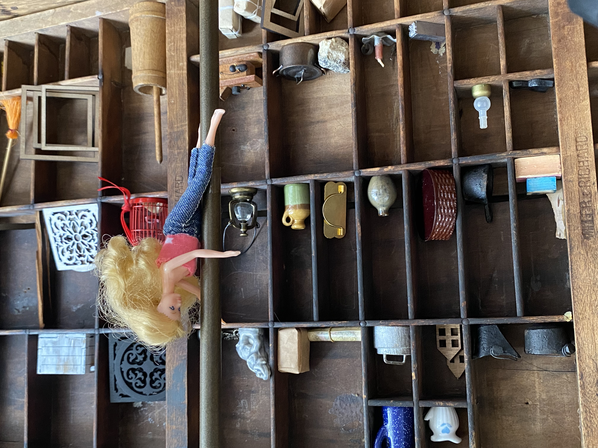
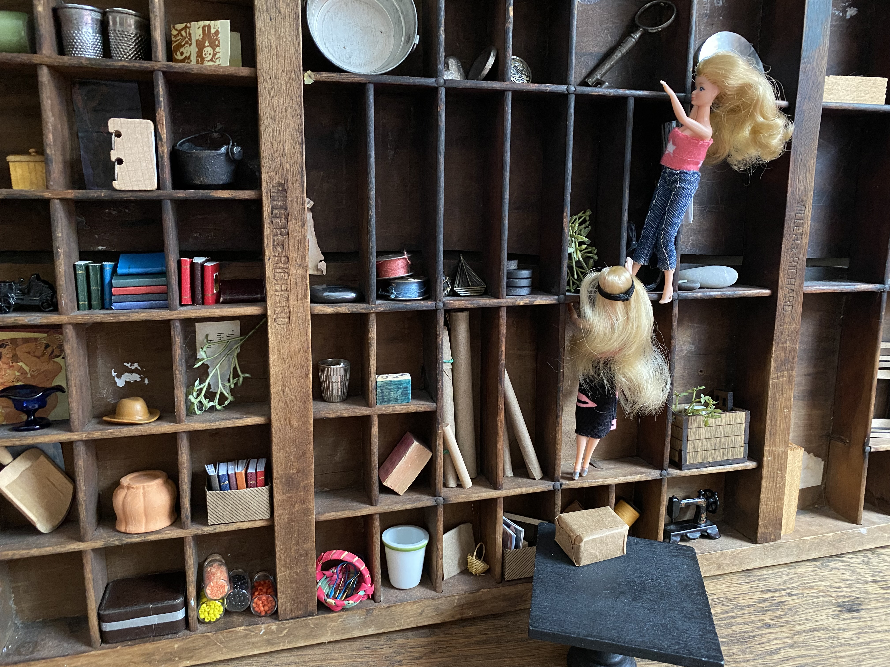
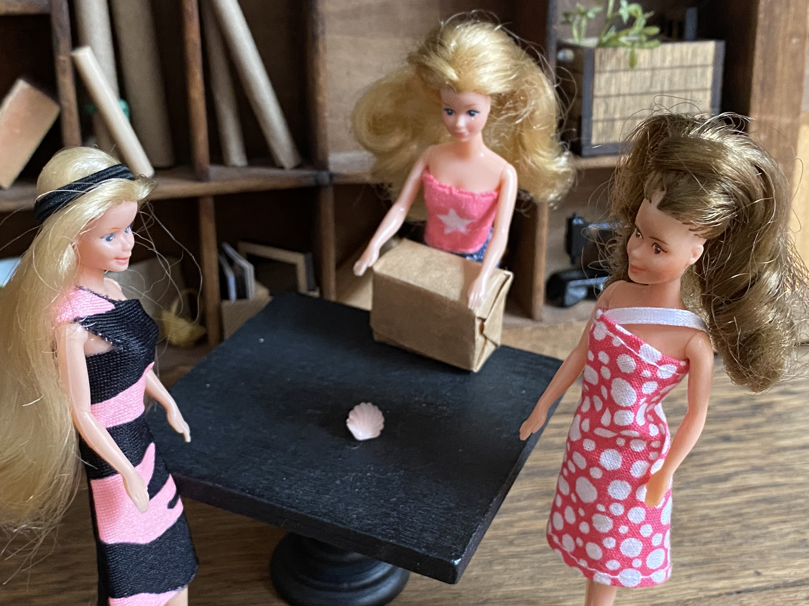

Chapter Three
"Maybe there isn't anything down there anyway," Amy tried to say positively as she started the car. As she pulled onto the street, she looked at Emerald.
A tear slid down Emerald's cheek. She said softly, "Can we go back to the other Museum, please?"
"Now?" At Emerald's nod, Amy said "Sure!" and headed in town.
They parked in nearly the same spot they had the day before. Just before Emerald opened her door, Amy asked quietly, "Do you have a plan?"
Emerald nodded.
"OK," Amy said. "Let's go."
Both Amy and Glissen followed as Emerald retraced their steps from yesterday, into the Museum. This time, however, Emerald walked right up to the information desk.
And she asked to speak to Samuel Rosing.
"Certainly," the attendant behind the desk replied. "I'll ring him."
As the girls stood aside, waiting, Emerald turned to her sisters. "This is the only thing I could think of," she told them.
The employee door opened. When Mr. Rosing came out, he looked with surprise at the girls, then he smiled.
"Hello again," he said warmly. The smile faded as he noticed the look on all three of the girls faces.
"Oh my dears, something has gone wrong. What happened?" he asked.
"Mr. Samuel," Emerald started, "We went to the Museum and Library, and, well..." as she trailed off, Amy picked up.
"Turns out the basement archives are still there, which is good news, but—"
Glissen couldn't keep silent any longer.
"They wouldn't let us see it!" she exclaimed. " 'Off limits to the public!' she said! 'No exceptions'! she said!" Glissen did such a funny impression of the lady at the Library, it brought a little smile to her sisters faces.
Emerald mustered her courage again and spoke up.
"And so I wondered, since you seem to know the Museums so well, perhaps you know of a way that we could get in to see the archives?" She drew a deep breath. "Please, can you help us?"
Samuel looked at her sweet, beseeching face. His heart was touched by her earnestness.
"I will do my very best," he said gravely.
Emerald's tense shoulders relaxed slightly.
"Now, first things first," Samuel said in an upbeat tone. "You know me, but I don't know you! To whom do I have the pleasure of speaking?"
"Amy, Emerald and Glissen Dazzle," Amy introduced them, gesturing to each girl as she said their name. "We are so glad to know you, Mr. Samuel," she said.
Samuel scratched his head.
"Dazzle? Your last name is Dazzle?" The girls nodded. "Not part of the Dazzles—of Jillian and Julius Dazzle—Dazzles?"
"Yes!" Emerald and Amy nodded emphatically.
"Yes! Yesyesyes!" cried Glissen.
"Our mother was Aurora Dazzle," Emerald told him.
"Say no more." Samuel looked at her with a smile. "If anyone has a right to see the archives of the old museum, it would be a Dazzle."
Emerald's eyes widened in hope. "Are you sure?" she asked.
"Sure as the sun rises," Samuel stated. "You'll just need an escort to convince those folks of it. If you'll give me a minute, I would be happy to go with you."
As Samuel went to arrange for his leave from work, the girls quivered with excitement.
"Aiiiieee! Em! You're AMAZING!" Glissen shrieked as Amy jubilantly hugged Emerald.
Emerald brushed the remainder of tears from her cheeks. "I just need to see if anything is down there," she said.
"Just so I know."
~
"Déjà vu!" Glissen murmured as the girls entered the Dazzle Museum and Library with Samuel.
"Mr. Rosing!" the lady behind the desk stood up quickly when she saw him. "To what do we owe the pleasure of your visit?" Then she noticed the girls. She looked back at Samuel, puzzled.
"Miss Claire," Samuel tipped his head in greeting.
When Samuel told Claire who the girls were, Claire looked surprised.
"Why didn't you say so?" she asked. "The archives would never be off limits to anyone in the Dazzle family. Nearly everything down there once belonged to one of your ancestors." She opened a drawer and retrieved a key, which she handed to Samuel. "You'll show them the way?" At his nod, she said to the girls, "Take as much time as you like."
As they turned away, Glissen murmured, "So much for no exceptions!"
The girls followed Samuel into the Library. He led them through a door marked "Administration", which opened into a hallway with an array of offices leading from it. Then he went through a door that opened to a stairwell.
"This building is quite old," Samuel told them. "It wasn't always the Dazzle City Museum and Library, but it served us well for many decades, until it was determined that Dazzle City needed a much bigger museum. Once the Greater Museum was built, this became exclusively a library. Anything that didn't transfer to the new museum was put here, in the basement archives. The building is now protected by the Historical Society, which is why the old sign is still out front."
They reached the bottom of the stairs. Samuel fit the key into the lock of a door with the word ARCHIVES on it. He turned to the girls.
"The archives are below us, in a room almost two floors deep. As I said, this is an old building. There are a couple of ways down." He winked at Glissen. "I think you will have an interesting day, even if you don't find what you're looking for." He unlocked the door and handed the key to Amy. "I trust you will turn this in when you leave," he told her.
He stepped back. "Now, I must go. But if you need me for anything—" He was interrupted by Emerald, who threw her arms around him in a tight hug.
"Thank you so much for your help," she said.
"My pleasure." Samuel shook hands with Amy and Glissen. "I hope this isn't the last time I see you. Please stop by and say hello – you know where to find me," he smiled.
Affirming that they would certainly stop in, the girls said their goodbyes as Samuel headed back up the stairs.
"Here we go," Amy said, and opened the door.
"More stairs," Glissen said. "Oh! And—"
"Oh my!" said Amy.
"Um..." said Emerald.
"IT'S A POLE IN A HOLE!" Glissen cried, "A POLE IN A HOLE!"
"Yes, yes, yes," said Amy, "We get the gist."
"Should we use it?" Emerald wondered.
"Why not?" said Amy.
And she slid down the firemen's pole.
"It's really dark down here," Amy's voice seemed far away. "We need to find the lights."
"Maybe at the bottom of the stairs," Emerald called. She hurried down the two flights of stairs, and sure enough, at the bottom was a switch.
"Phew!" Amy exclaimed as the lights went on. "I was afraid to move!"
"Look out below!" Glissen's voice called."Aiiiiee!" she squeaked as she slid into the room.

"WHAT fun!" Glissen's eyes glowed with delight. "You next, Em!"
But Emerald was looking at the room around her. It was amazing! The ceiling was so high, it didn't really feel like a basement, or that they were far underground, with a brick building above them. The room they were in was huge, and there were a couple of doorways that led to further areas. The shelves along the walls were filled with so many things it was mind boggling.
"I should have brought a flashlight," Emerald said.
"I've got a little one," Amy said, rummaging in her purse.
"My cell phone light should help too," Glissen offered.
"Let's see if there's a place that's similar to the photo," Amy said. "Things may have gotten moved over the years, but it seems the best place to start." She moved her light slowly across the walls, around the room.
"Holler if you find something," Glissen said, and went into the next room. Then she decided to explore a little first. She discovered that there were five other rooms. She hurried back to her sisters to tell them.
"It's like a sandwich," she told them. "The far room is like this one, long and wide. The rooms in between are half the size of this one. I'm hungry."
"Let's get moving," Amy said. "We already scanned this room, and it doesn't seem to match the one in the photo. Let's go through the other rooms in the same way."
It took a little while, slowly scanning each wall for similarities to the one in the picture. As they proceeded further into the archive rooms, Amy noted, "The stuff seems to be dating further back than the things in the front room. Maybe that's a good thing."
It was in the big back room that they found what they were looking for. The back wall didn't yield anything, but when they turned around to face the wall with the door they came in, Emerald gasped.
"This is it! I can't believe it!" she said in amazement.
Amy held the photograph up and Glissen turned her cell phone light on it.
They all looked from the picture to the wall, to the picture, and back again.
"You're right Em," Glissen said.
"All of the things in the picture are there," said Amy. "I mean, it seems that way anyway. Stuff has certainly been added."
Indeed, there wasn't an empty space to be seen.
"Alright." Glissen was ready for business. With her hands on her hips, she surveyed the wall. "What are we looking for?"
"Something in the photograph?" Amy offered.
"Will we know it when we see it?" Emerald questioned.
"I see a shoe," Glissen commented. "Perhaps it fits each and every one of us, and thus is magical? For what purpose, I have no idea."
"'It's value is beyond what one can see'," Amy quoted. "Makes it pretty hard to know what we're looking for."
"What about a map?" Glissen said. "Or, there's a lot of boxes. I'll check those."
"There are a lot of books too," Amy took one within reach off the shelf. "Maybe a book that has some valuable information about our history?"
"Beyond what the eye can see," Emerald murmured. "is that a clue somehow?"
Without knowing what they were looking for, they decided to examine each shelf and cubby in the photograph.
After about half an hour, Glissen moaned. "Ugh, this is the pits." She stretched her arms up over her head. "Hey, look! I see a key! Up there! Is it in the picture?"
They looked closely at the picture.
"Yes! Near the top!"
"Where the edges are out of focus because of the dim light," Amy commented.
"Huzzah! I'm going to get it!" Glissen exclaimed excitedly.
Amy looked around. "This table—you can stand on it." The two of them moved the table close to the wall and Glissen climbed onto it.
"Not even close," she muttered, and stepped up onto a shelf.

"Yikes—be careful!" Amy quickly climbed onto the table to support Glissen. "A little help, Em?"
Emerald looked up from a book she'd gotten lost in, and her eyes widened in surprise. Her sisters were apparently scaling the bookshelf walls.
"I can-almost-reach-it," Glissen was holding onto the bookcase like she was climbing a ladder, and her arm stretched up to the key.
"Um, guys? This thing is huge! We're going to need another plan." She carefully returned to the floor, with Amy's help.
Emerald put the book she was holding back on the shelf. She didn't think that big key was what they were looking for. Keys were obviously useful. And that key was so big!
" 'It's value is beyond what the eye can see'," she repeated softly to herself. "Beyond... beyond... but maybe... what the ear can hear? Mom did have a beautiful voice that she said her mom had too. Music definitely runs in the Dazzle family." She thought for a moment. "What about 'It's value is beyond what the eye can see but not what the ear can hear'? It's kind of a leap...but..." and Emerald began to hum the tune from the music box.
"Ummm, Em?"
Emerald stopped humming and looked at her sisters, who were frozen, staring wide-eyed up at the bookcase.
Emerald looked up. It looked as if someone had turned on a night light in a cubby over her head. As she watched, the light faded.
"What was that?" she asked.
"Don't know." Her sisters looked a little scared. Emerald stepped back to try to see what was on that shelf. A seashell? It was hard to tell. She wet her lips and whistled the music box tune.
And all three of them watched as – whatever it was – started to glow.
"THAT"S IT!!!!!" Glissen shouted. "Em found it!!"
"But how—" Amy started.
"Who cares? Let's get that thing down and investigate!" Glissen was so excited, she was already pulling the table closer.
Once atop the table, they could reach the cubby easily.
"It is a shell," Emerald said. She picked it up carefully and handed it to Amy before getting down.
Amy set it gently on the table so they all could look at it. It appeared to be an ordinary seashell, unassuming in its coloring, although it was pretty big for a scallop.

Glissen whistled the music box tune.
Nothing happened.
They couldn't have been more disappointed!
"Does it have to be on the shelf?" Glissen asked what they were all thinking.
Emerald hummed the music box tune sadly.
And the shell began to glow softly.
"You try Amy!"
"Ugh, I can't hold a tune properly!" As the glow faded once Emerald stopped humming, Amy tried to hum the tune.
The shell remained the same.
"Is it Emerald?" Glissen wondered.
"I don't know. But I do think this is the "valuable" object in the photograph." Amy pointed. "It's there, barely visible, but not too far from the middle. And it does look pretty ordinary."
"How can we take it home with us?" Emerald asked. "We can't steal it. Can you just check something out of the archives like a book?"
"Only one way to find out! Let's go. And can we get some lunch on the way home?"